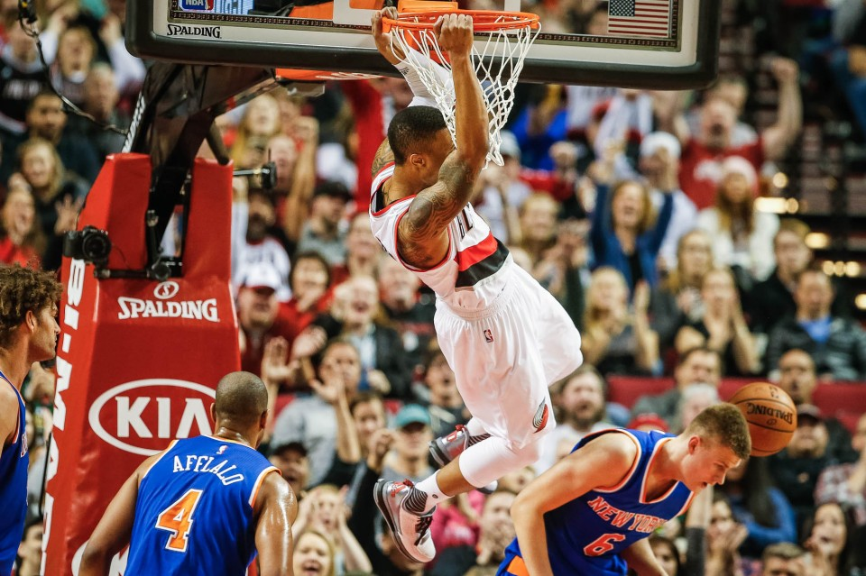
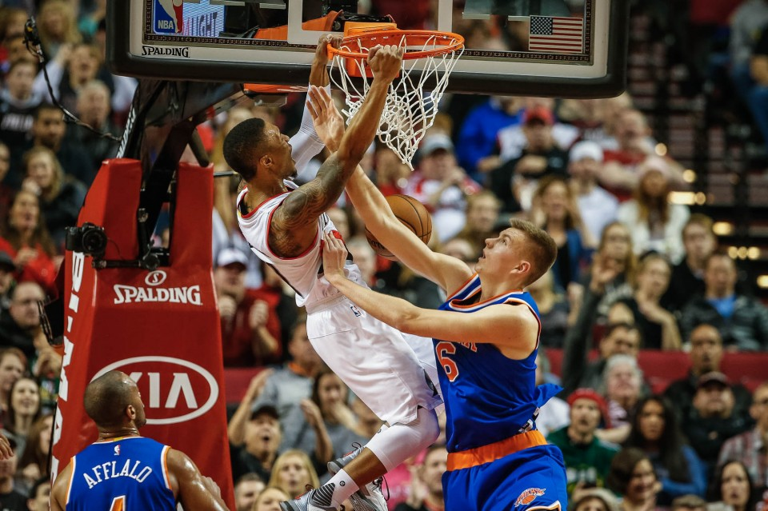
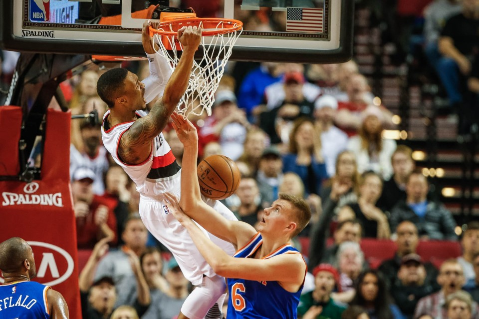

Damian Lillard says All-Star team omission will fuel Trail Blazers playoff push

Portland Trail Blazers guard Damian Lillard (0), dunks on Knicks rookie Kristaps Porzingis in the first quarter of the New York Knicks at the Moda Center in Portland, Oregon, Saturday, Dec. 12, 2015. Thomas Boyd/Staff
By Mike Richman|The Oregonian/OregonLive
on Jan. 28, 2016 at 7:01 PM,
updated Jan. 29, 2016 at 9:59 AM
Trail Blazers point guard Damian Lillard was clear Thursday evening when discussing his exclusion from the Western Conference All-Star roster.
He feels like he has played at an All-Star level even if the league's assistant coaches, who vote on the All-Star reserves don't agree. He said he'll use the omission as fuel for the second half of the season where he'll turn his attention to a playoff push.
Lillard spoke with a group of reporters prior to a Blazers season ticket holder event at the Moda Center. Here's a transcript of what he had to say:
What was your initial reaction?
I wasn't really surprised by it. You know, I knew that it would be a close decision I guess. I honestly wasn't surprised by it.
How did you find out?
I saw something on Twitter. After practice I saw somebody said it was like breaking news or something. I saw a list and wasn't on it. Then I went home and I was watching TNT and I wasn't on that either. So that was how I figured it out.
How do you account for missing out on the All-Star selection a couple years in a row? You have to feel like you're at an All-Star level.
That's it. There's nothing that I could have done. The numbers speak for themselves. My team is in playoff position, we're in the eighth spot right now. So I really don't know the answer to it. I feel like I've played at an All-Star level and obviously the coaches didn't.
"I feel like I've played at an All-Star level"
Thoughts on LaMarcus Aldridge making the team?
Well they're the second best team in the league. With Kawhi (Leonard) obviously being a starter then LA is the next guy. Any team that's playing at that level should probably have two All-Stars. LA's an All-Star, he's an All-Star level player. So that didn't surprise me.
Will you use the decision as fuel for the second half of the season?
Yeah. Like I said, I feel like I've played at an All-Star level; maybe I need to prove me. I'm not sure. I'll go out there and that wood on the fire will be more for my team. I think what I can do now is get this team into the playoffs. Put my energy into that. That's kinda what I'll be focusing on.
"...what I can do now is get this team into the playoffs. Put my energy into that."
Did your teammates reach out to you yet?
After practice when I saw on Twitter that it was breaking or whatever I said to, I think it was G, to Gerald, I was like, 'Man, I don't think I made it.' And then he was like, 'What?' And then everybody in the locker room turned around like, 'What? How?' And I was just like, 'That's just what happen, what it is.' They were probably more surprised than I was.
You were kind of anticipating missing the team?
Yeah. I don't know if you guys could tell. I was expecting the worst. Like I said before, I feel like everything I could have done to show or to prove that's what I am or where I belong, I feel like I did that. Maybe it just wasn't enough.
Would you go as an injury replacement?
Absolutely. Just because I didn't get picked doesn't mean I'm not an All-Star level player. So if it does happen then I'll be more than willing to go.

More from Saturday's game. Thomas Boyd/Staff
Kobe, DeMarcus Cousins and Nic Batum have all endorsed you as an All-Star. What does it mean to get that endorsement from your peers?
Well they're the people that I play against. They have to guard me and I have to guard them. That's the respect that you want. You want people to respect you because of their experience playing against you and how they feel about what you do against their team. I'm happy that they feel that way, but they aren't the people making the decisions.
Have you started to plan a vacation for All-Star week?
I'm trying to figure it out. Now that it's actually here I've been thinking about just sitting in my house and just kicking back like that. But I'm not sure. I'll figure out something.

More from Saturday's game. Thomas Boyd/Staff